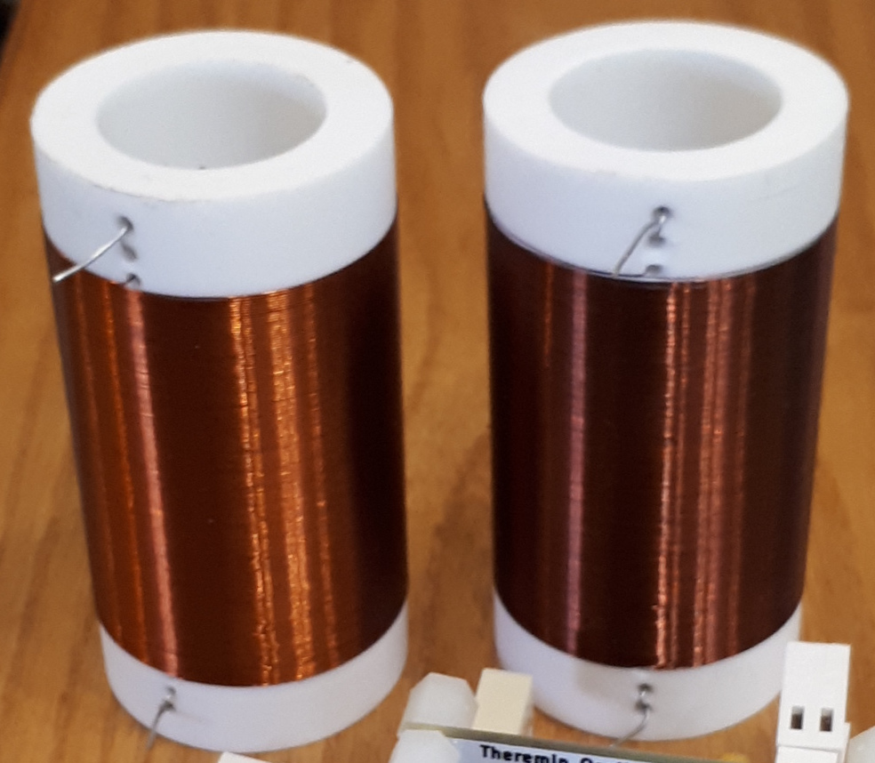
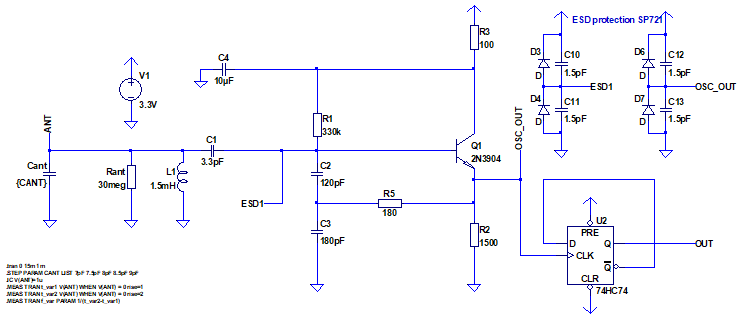
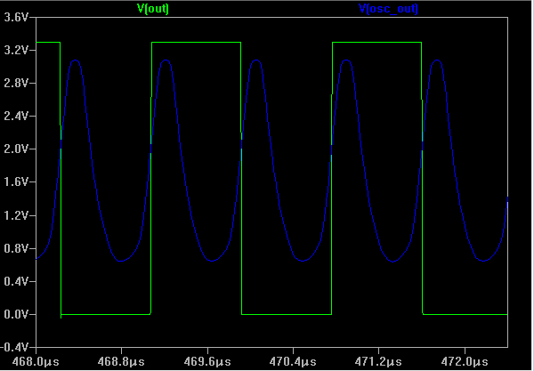
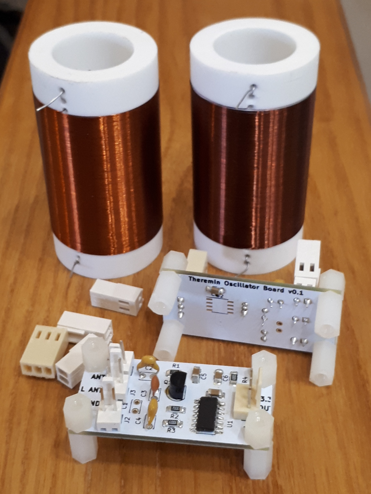
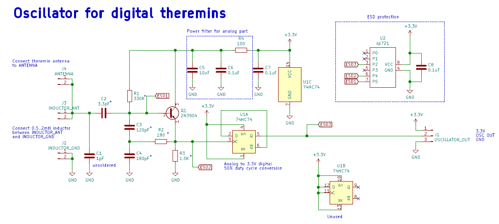
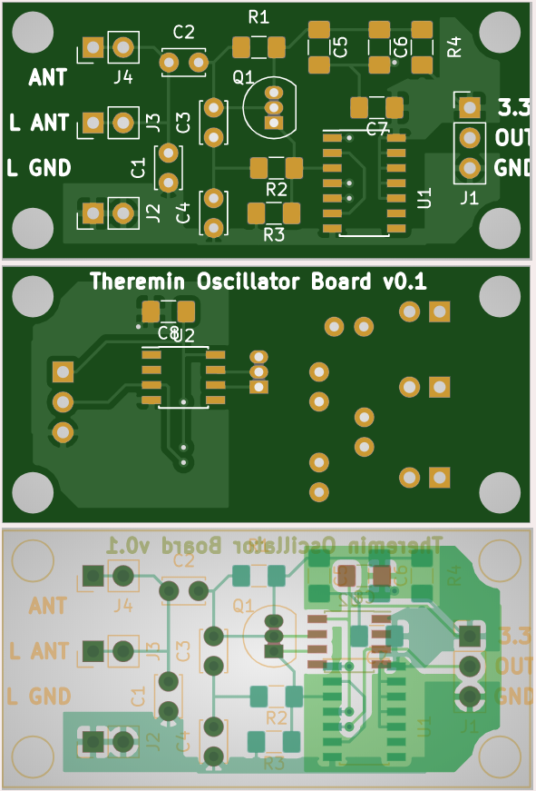

This page describes design of theremin's heart: oscillators
For digital theremins, oscillator should provide 3.3V digital signal which changes its frequency when hand approaches to antenna. Unlike analog theremins and some digital theremin designs, we will not use second oscillator and heterodyning thechniques. Instea, FPGA based solution allows to measure frequency of oscillator directly.
We will need two oscillators: one for Pitch antenna sensor, second for Volume antenna sensor.
Oscillator operating ranges for volume and pitch should not overlap. Usually, volume oscillator frequency is chosen ~1.5 times less than one frequency of pitch oscillator.
For better sensitivity, we have to maximize change of oscillator frequency when capacity of antenna is being changed as a reaction on hand movement.
In analog theremins, sensitivity of pitch oscillator is often reduced to get frequency change in audible range. In digital theremin sensor oscillator, we will try to maximize change of frequency.
Actually, antenna C is being changed in range 7..9pF for different hand distances.
For better sensitivity, we need LC oscillator with high Q. Air core inductors provide better Q than ferrite core ones. Let's wind our own inductors.
I'm using 60mm pieces of 32mm PPL water pipe as a frame for inductors.
One layer coil-to-coil copper wire 0.1 or 0.2mm with winding length up to 45mm.
Pitch and volume oscillators should have inductors with L different by 1.5..2 times
Sample winding parameters:
As a base for oscillator schematics we are taking one of designs provided in really long Dewster's topic
LTSpice tool is useful for simulation and playing with different part values.
LTSpice model:
Using simulation with different part parameters, we are trying to maximize voltage swing on antenna as well as frequency response (difference of output frequency for min and max antenna capacity)
Simulation results:
Voltage swing on antenna according to LTSpice simulation will be up to 70V
D-trigger is used to make 3.3V digital 50% duty cycle output, and to use most sharp edge of oscillator waveform for switching.
Schematic and PCB is designed in KiCAD based on LTSpice simulation results.
| Board | KiCAD Schematic | Gerber file |
|---|---|---|
| Oscillator  |
 |  |
FPGA receives oscillator output via digital input pin. (One pin for pitch, one for volume)
todo
todo
todo
todo
todo
todo
todo